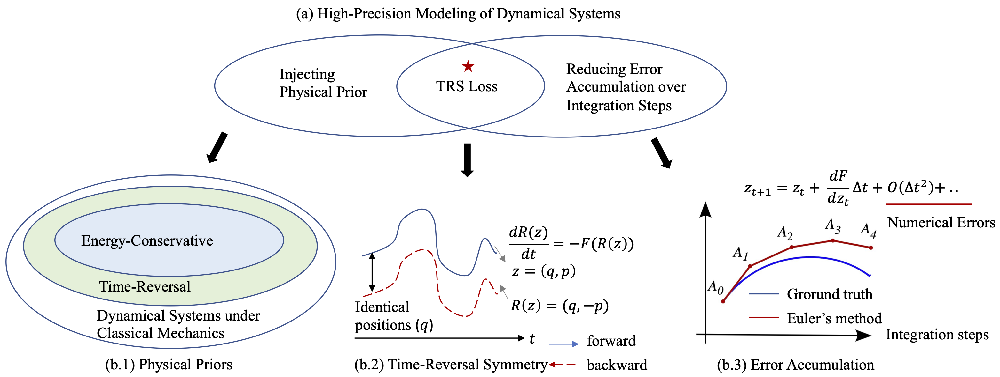

Overall framework of TREAT. \(O_1, O_2, O_3\) are connected agents. It follows the encoder-processor-decoder architecture introduced. A novel TRS loss is incorporated to improve modeling accuracy across systems from the numerical aspect, regardless of their physical properties.
Learning complex physical dynamics purely from data is challenging due to the intrinsic properties of systems to be satisfied. Incorporating physics-informed priors, such as in Hamiltonian Neural Networks (HNNs), achieves high-precision modeling for energy-conservative systems. However, real-world systems often deviate from strict energy conservation and follow different physical priors.
To address this, we present a framework that achieves high-precision modeling for a wide range of dynamical systems from the numerical aspect, by enforcing Time-Reversal Symmetry (TRS) via a novel regularization term. It helps preserve energies for conservative systems while serving as a strong inductive bias for non-conservative, reversible systems.
While TRS is a domain-specific physical prior, we present the first theoretical proof that TRS loss can universally improve modeling accuracy by minimizing higher-order Taylor terms in ODE integration, which is numerically beneficial to various systems regardless of their properties, even for irreversible systems. By integrating the TRS loss within neural ordinary differential equation models, the proposed model \model demonstrates superior performance on diverse physical systems. It achieves a significant 11.5% MSE improvement in a challenging chaotic triple-pendulum scenario, underscoring \model's broad applicability and effectiveness.
Illustration of time-reversal symmetry. The total length of the trajectory is \(t_K-t_0 = T\). \(t_k'\) is the time index in the reverse trajectory, which points to the same time as \(t_{K-k}\) in the forward trajectory.
Implementation of the Time-Reversal Symmetry Loss.
We can see two nice properties of our proposed time-reversal loss:
To demonstrate the effectiveness of TREAT, We conduct systematic evaluations over five multi-agent systems including three 5-body spring systems, a complex chaotic pendulum system and a real-world motion capture dataset; and four single-agent systems including three spring systems (with only one node) and a chaotic strange attractors system.
Table 1 shows the prediction performance on both multi-agent systems and single-agent systems measured by mean squared error (MSE). We can see that TREAT consistently surpasses other models,highlighting its generalizability and the efficacy of the proposed TRS loss.
Visualization for 5-body spring systems (trajectory starts from light to dark colors).
TRS loss visualization across multi-agent datasets (scales of two y-axes are different).
We conducted ablation studies on the implementation of \(\mathcal{L}_{reverse}\), evaluated performance across different prediction lengths and coefficients, and performed sensitivity analyses on solver choice and observation ratios.
Varying prediction lengths across multi-agent datasets (Pendulum MSE is in log values).
Varying \(\alpha\) values across multi-agent datasets.
We also demonstrate the chaotic behavior of the triple pendulum which often referred to as the "butterfly effect", and calculate the Maximum Lyapunov Exponent (MLE) to quantify the level of chaos in different kinds of systems.
Illustration to show the pendulum is highly-sensitive to initial states
@article{huang2023tango,
title={TANGO: Time-Reversal Latent GraphODE for Multi-Agent Dynamical Systems},
author={Huang, Zijie and Zhao, Wanjia and Gao, Jingdong and Hu, Ziniu and Luo, Xiao and Cao, Yadi and Chen, Yuanzhou and Sun, Yizhou and Wang, Wei},
journal={arXiv preprint arXiv:2310.06427},
year={2023}
}